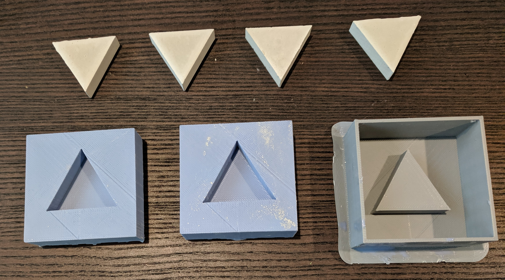
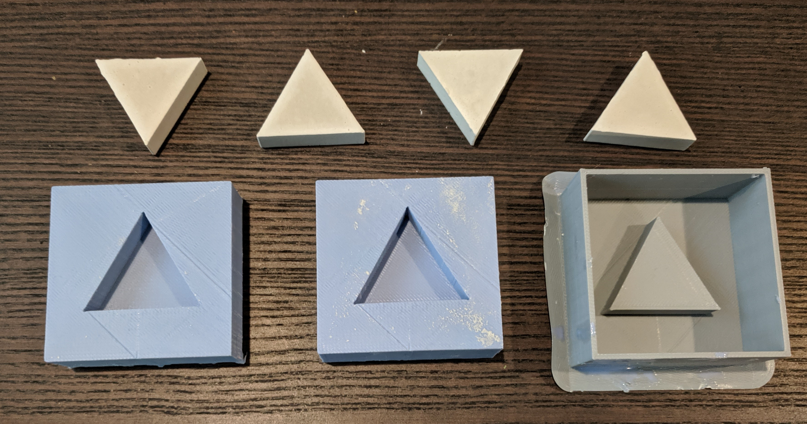

Assignment 6: Molding & Casting a Triangle

For this assignment, I choose a simple shape to create the mold & final plaster parts.
Source Files
3D Printing
After creating the file on OnShape, I used Dremel to prepare the file to print. While converting from OnShape to Dremel, I had to resize and increase dimensions.

I used the recommended 3D printer settings based on the filament specs.

Since it was a small shape, the 3D printing took about 2.5hrs


Mold & Casting
I used OOMO and created two molds from the 3D printed mold of the mold. This step was fairly straightforward.

Final Output
Finally I poured plaster into the 2 molds to create 4 exact triangle parts.

Issues encountered & lessons learnt
Given the challenges with getting machineable wax to be cut up into the required shape before milling, I am glad I decided to 3D print the mold of the mold.
Peer Attributions
Thank you Julie T Do for talking through designing the mold of the mold using 3D printing + helping with OnShape & converting the file in Dremel.
Thank you Christa Keizer for your help with OnShape & brainstorming the approach to creating a mold of the mold using OnShape.
Thank you Leo for your suggestions about creating 2 silicone molds, so we can create plaster outputs in parallel.